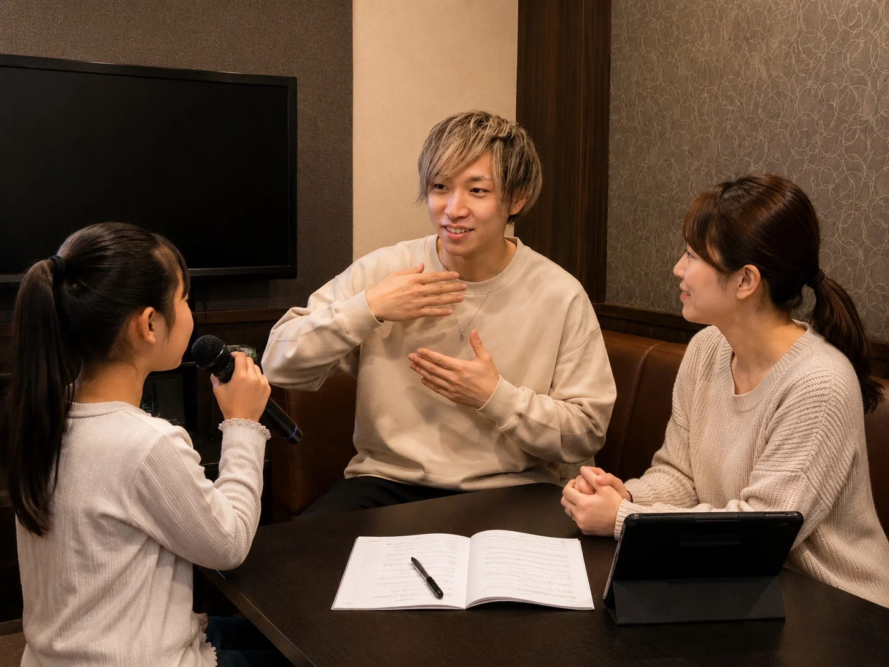
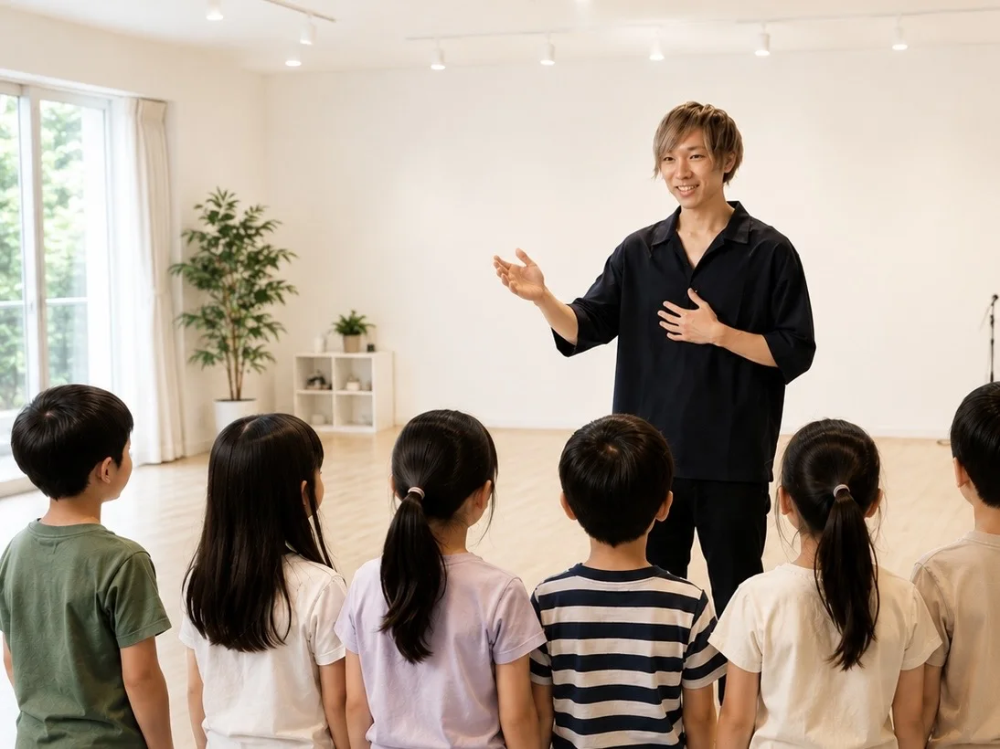

はじめまして
P.S.歌ってみた部の代表、兼講師の谷口剛気です。
普段はボイストレーナーとしてレッスンを行いながら、TV番組への楽曲提供、子供向けダンスイベントの主催など、音楽に関わる様々な活動をしています。
プライベートでは3歳の娘を育てており、子どもと関わる時間の中で、一人ひとりの個性や成長のペースを大切にすることの大事さを日々感じています。
放課後等デイサービスでの出張ボイトレ経験や、三重県志摩市での地域活性化イベント代表運営の経験もあります。
だからこそ、レッスンでは「上手く歌うこと」だけでなく、「安心して声を出せること」を大切にしています。
レッスンについて
レッスンでは発声や歌い方の練習はもちろん行いますが、まずは生徒さんとしっかりお話をすることを大事にしています。
好きなアーティストの話をしたり、最近ハマっている曲を聞いたり、学校の話をしたり。
その子がどんなことに興味を持っているのかを知った上で、一人ひとりに合わせてレッスンを進めています。
人見知りのお子さまもたくさんいますので、最初は緊張していても大丈夫です。少しずつ慣れていけるようにサポートしています。

音楽との関わり
現在は楽曲制作も行っており、ライブハウスでの演奏やイベント出演も続けています。
レッスンでは基礎的な発声だけでなく、J-POP、アニソン、ボカロ、歌ってみたなど、生徒さんが好きなジャンルに合わせて練習することができます。
「好きな曲をもっと気持ちよく歌えるようになりたい」そんな気持ちを応援できればと思っています。

公開可能な実績
- 京橋商店街組合センベロ 音楽ステージ開催
- 大阪城野外音楽堂 JO-SONIC出演
- 日テレ特番 楽曲提供
- テレ朝番組 楽曲提供
- 沖縄レストラン MAGIC OCEAN ステージ楽曲提供
- MASKED SHOWMAN クリエイティブスタッフ
実績よりも、レッスンではお子さま一人ひとりに寄り添うことを大切にしています。
最後に
歌を通して、「できた！」「楽しかった！」「また歌いたい！」そんな気持ちが増えていくことが、何より嬉しいです。
体験レッスンでは、まずその場の空間や先生の雰囲気を知っていただければと思います。
お会いできることを楽しみにしています！